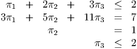
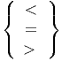

- Scenario 1 occurs with probability
 . The second stage variable y ∈ ℝ must satisfy the
constraints
. The second stage variable y ∈ ℝ must satisfy the
constraints
- Scenario 2 occurs with probability . The second stage variable y ∈ ℝ must satisfy the
constraints
- (10 points) Assume x satisfies the first stage constraints. Show that in each scenario, there exists a recourse decision y that is feasible in the second stage problem.
- (10 points) Assume the cost of the second stage variables is 3y. Formulate the stochastic program in extended form as an LP. (Hint: your problem should have three equality constraints and four variables.)
- (10 points) Find all the basic feasible solutions to the LP formulation. Find the optimal solution.
- (5 points) What is the dual to the LP formulation?
- (10 points) Use complementary slackness to find the set of optimal solutions to the dual problem.
Solution:
-
- In Scenario 1: y = 13 - 2x1 - 5x2 ≥ 13 - 2x1 - 6x2 = 1, so y ≥ 0.
- In Scenario 2: y = 22 - 3x1 - 11x2 ≥ 22 -x1 - 11x2 = 0, so y ≥ 0.
- Stochastic program is:
- We know from a homework question that this problem has at most two extreme
points. The extreme points are found by setting x1 = 0 or x2 = 0. They
are:
- x = (0, 2), y = (3, 0), with value 17.
- x = (6, 0), y = (1, 4), with value 21.
Hence, the optimal solution is x = (0, 2), with recourse variables y = (3, 0).
- Dual problem is
- The optimal primal solution is degenerate, so there may be multiple optimal dual
solutions. From complementary slackness and dual feasibility, we need:
 We can use the two equalities to set π2 = 1 and then express π1 = (2 - 11π3). The two inequalities then become:
orThus, the set of dual optimal solutions is the line segment:
System 1: Ax < 0, Bx = 0 for some x ∈ ℝn.
System 2: AT u + BT v = 0 for some u ∈ ℝp, v ∈ ℝq, with u ≥ 0 and u≠0.
Solution:
Let e denote the vector of ones. Consider the primal-dual pair of LPs:
- Assume System 1 is consistent: Any feasible solution to System 1 can be scaled to give a feasible solution to (P). Thus, the optimal value of (P) is 0, so (D) has optimal value 0, so System 2 is inconsistent.
- Assume System 1 is inconsistent: Then (P) is infeasible. Problem (D) is always feasible: take u = 0 and v = 0. Thus, (D) must have unbounded optimal value. So there exists u, v with AT u + BT v = 0, u ≥ 0, eT u > 0, so System 2 is consistent.
Let n = 4. Assume the cost ct of a tour is given by the sum of the edge lengths in the tour, and the edge lengths are as follows:
| city | 0 | 1 | 2 | 3 | 4 |
| 0 | – | 4 | 7 | 9 | 4 |
| 1 | 4 | – | 4 | 6 | 8 |
| 2 | 7 | 4 | – | 7 | 5 |
| 3 | 9 | 6 | 7 | – | 7 |
| 4 | 4 | 8 | 5 | 7 | – |

No tour is allowed to visit more than three cities (plus the base city). A tour can visit just one city and the base city. So, for example, valid tours include 0 - 4 - 0 with cost 8 and 0 - 1 - 2 - 3 - 0 with cost 24.
- (5 points) What is the dual LP to (CP)?
- (10 points) Let the current dual solution be y = (6, 8, 10, 7)T . Find a violated dual constraint.
- (10 points) There are 14 feasible tours for this problem. Enumerate them all and hence show that ŷ = (4, 8, 12, 5)T is dual feasible.
- (10 points) What does complementary slackness imply about the primal solution if the dual solution is ŷ? Show there is a primal feasible solution satisfying complementary slackness with each positive xt taking the same value. What do you conclude?
Solution:
- Dual problem is
- Need a subset of the cities with the length ct smaller than the sum of the y values for
the cities in the subset. Take cities {1, 2, 4}. Then ct = 17, but (at)T y = 21. The violated
constraint is
- Enumerate the various subsets:
subset t ∑ i∈tyi ct (at)T yct 1 4 8 < 2 8 14 < 3 12 18 < 4 5 8 < 1,2 12 15 < 1,3 16 19 < 1,4 9 16 < 2,3 20 23 < 2,4 13 16 < 3,4 17 20 < 1,2,3 24 24 = 1,2,4 17 17 = 1,3,4 21 21 = 2,3,4 25 25 = - From complementary slackness, the only primal xt variables that can be positive
are those corresponding to the subsets of size 3. Also, since each ŷi > 0, all
the primal constraints must hold at equality. So the primal variables must
satisfy:
The solution to this system is x123 = x124 = x134 = x234 =
 , with all other xt equal to
zero. We have primal feasibility, dual feasibility and complementary slackness, so we
have optimality.
, with all other xt equal to
zero. We have primal feasibility, dual feasibility and complementary slackness, so we
have optimality.
Check objective function values:
- Dual value: 4 + 8 + 12 + 5 = 29.
- Primal value: (24 + 17 + 21 + 25) = (87) = 29.
So primal and dual objective function values agree.